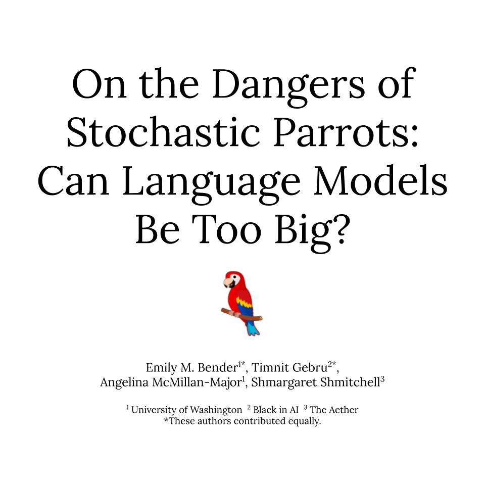
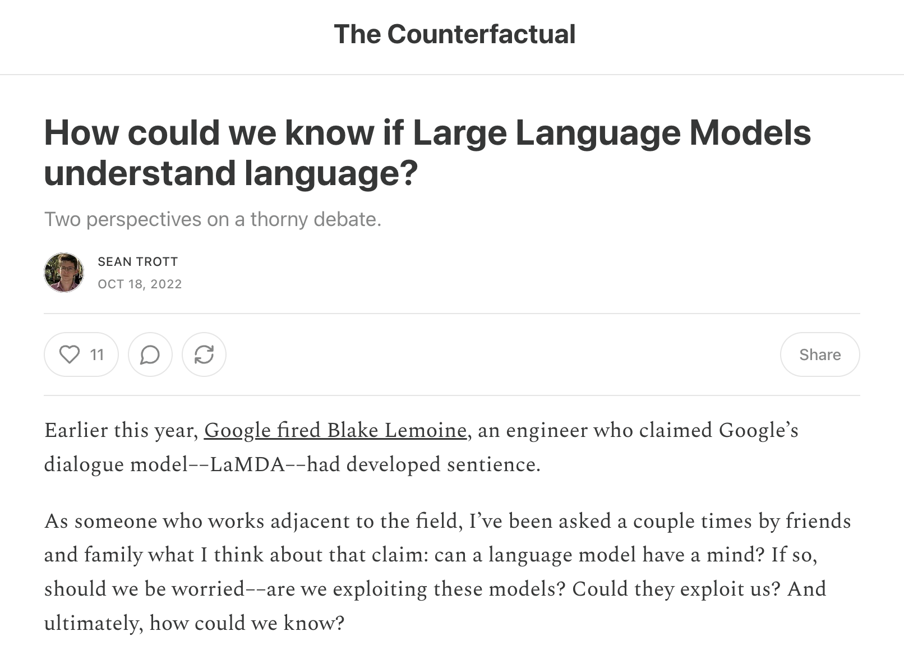
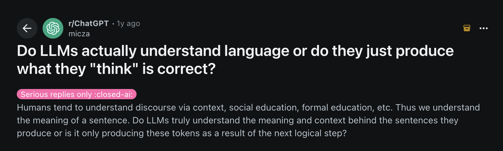

Do LLMs Really Understand Language?

Context
During the class discussion with Dr Marlon Twyman, we discussed the idea of whether or not LLMs can really understand language. This debate came from a section of the paper “On the Danger of Schoastic Parrots,” where the authors discuss the linguistic concept of a “garden path” and how LLMs can lead us down this path to deceive us in believing that it can actually understand language.

When the class was asked if they believed that LLMs were capable of true understanding, 8 said “not sure” and 8 said “no.” I was conflicted on this idea, bordering on the edge of “yes” and “not sure.” I’ve been wondering what others online think about this, so in this blog, I explore what others are saying about this topic.
Sean Trott’s “The Counterfactual”
Sean Trott is an assistant professor at UC San Diego. His blog, The Counterfactual, explores LLMs and Cognitive Science. In this specific article, he thinks about whether or not LLMs can truly understand and answers the question: “can a language model have a mind?”
Trott’s research areas are really interesting – take a look here.

In this article, two main viewpoints are presented: - Axiomatic rejection view: LLMs cannot understand language because they rely only on linguistic form (without grounding in real-world meaning, intention, or cognition). This view draws from arguments like Searle’s Chinese Room, ultimately arguing that behavior alone isn’t sufficient to prove that the LLM is actually understanding. - Duck test view: If a model consistently behaves as though it understands language (by passing tests and responding in meaningful ways), then it should be considered as having some form of understanding. In this view, understanding is judged based on observable behavior.
Personally, I can understand both of these views, and I think it comes down to how you define “understanding” to answer the question. Trott himself ultimately favors the duck test approach, seeming to argue that understanding should be empirically studied through measurable behaviors rather than ruled out by definition.
I was surprised by this, since the duck test view feels like it would be the more unpopular view. I was also surprised that this article was written in 2022, which, given the speed of LLM advancements, feels like a long time ago. The capabilities of LLMs like ChatGPT have grown exponentially since then, so I expect that Trott would feel even more strongly about his claims now.
I found many interesting opinions that people were voicing on Reddit forums under the ChatGPT subreddit and LocalLLaMA subreddit.

One person said: > What CURRENT LLMs do…is roughly analogous to what just the language bits of the human brain do. If you analyze your own behavior you’ll see most people do not “think” about their responses very much at all when having a conversation unless they’re talking about something fairly novel they have to think about. When someone’s just asking how you’ve been or whatever, you can pretty much just “predict the next word” and it enables you to respond very quickly without thinking about it much (or even while seamlessly thinking about something else entirely and not paying attention).
This comment had the most upvotes, with someone replying that they “hit the nail on human language.” I thought this idea was interesting but a bit over-simplified – even when we feel like we’re responding to things automatically, saying that we’re just “predicting the next word” puts too much of a black box over our cognitive mechanisms.
Someone else said: > I don’t think there’s anything to be gained from trying to discuss this without defining exactly what we mean by “understand”. What exactly is going on when a human “understands” something in a significant way? Only then can we check if something similar is going on in the LLM.
I completely agree with this comment – our understanding of “understanding” varies too much to productively discuss this debate at hand. As we saw in Trott’s article, viewpoints of what “understanding” means can differ significantly. Depending on the context and use case, we might care more about some definitions of understanding and less about others.
In fact, one poster under the r/LocalLLaMA subreditt said: > I would like to propose here a simple definition of understanding. It is pragmatic, and sidesteps the issues of subjectivity that lead us down rabbit holes of circular argumentation. Let us speak functionally of what understanding is. Understanding is the product of learning.
I thought this idea of understanding being “the product of learning” was really interesting at first, but the more I thought about it, I feel like this doesn’t get us closer to a more concrete and standardized definition of understanding. By phrasing it as “the product of learning,” one might then ask – “what is defined as learning?” For example, does an LLM updating its weights and being fine-tuned sufficient to count as “learning?” It is technically updating its “beliefs” and relationship between ideas, but some would argue that this would not count as true learning.
Overall, I feel like this disconnect comes from trying to apply abstract concepts like understanding and learning to a very mechanical and concrete system like an LLM. Going forward, I’m interested in seeing if the progression of LLMs’ capabilities actually impact and change peoples’ conceptions of what understanding and learning actually mean!